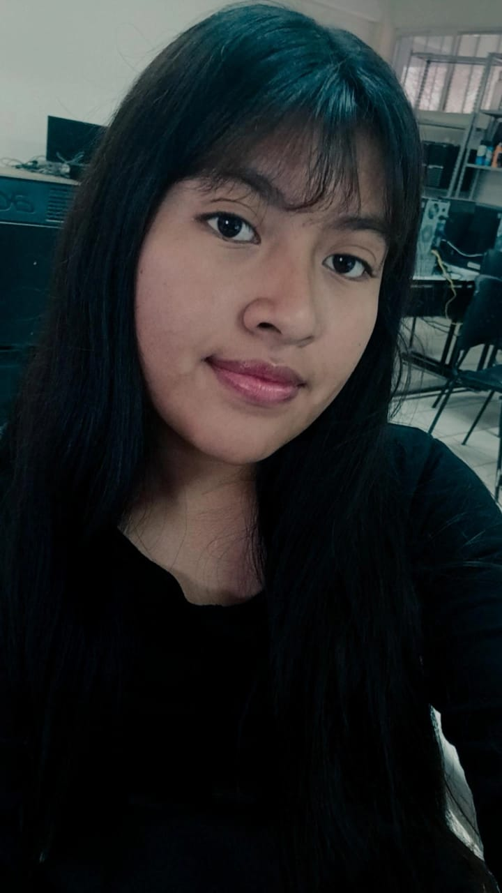

Flor Rubi
Moroyoqui
DISEÑADOR GRÁFICO
EDUCACIÓN
- Escuela secundaria técnica numero 7
- Escuela primaria Niños Héroes
- Kinder Pedro calderon de la barca
HABILIDADES
- Comunucación
- Trabajo en equipo
- Responsabilidad
ACERCA DE MI
Soy un estudiante de preparatoria en la especialidad de diseño gráfico
con varios trabajos realizados, manejo varios tipos de software como Ilustrator..etc
mantengo un promedio de 7 y 8.
EXPERIENCIA LABORAL
- Diseños de logotipos
- Diseños en sketchup
- Diseños en Ilustrator
SOFTWARES
- Adobe ilustrator
- Sketchup
- Microsoft Excell
CONTACTO
- 6421496418
- Flor.rubyjk@gmail.com
- El rodeo